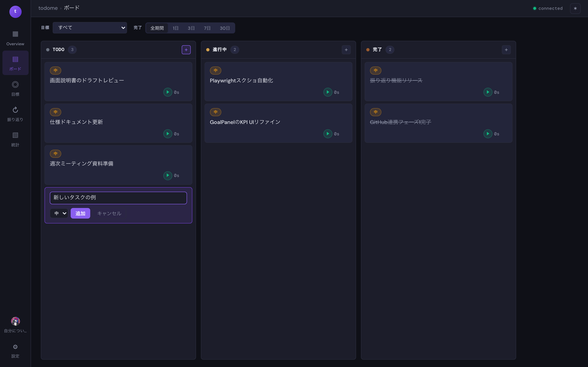
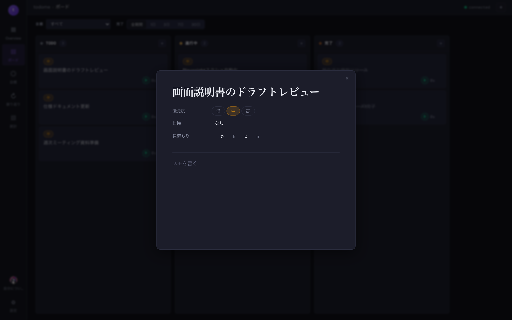

ボード
TrelloライクなKanbanボードで、タスクを 3 カラム (TODO / 進行中 / 完了) で管理します。 ドラッグでカラム間を移動でき、各タスクはワンクリックで作業時間を計測できます。

画面の見方
| 3 カラム (TODO / 進行中 / 完了) |
ステータスごとに縦並び。ヘッダ右の + から新規タスクを追加できます。
|
|---|---|
| 目標フィルタ | 上部セレクトボックスで、特定の目標に紐付いたタスクだけに絞り込めます。 |
| 完了タスクの期間絞り込み | 「1日 / 3日 / 7日 / 30日」で、指定期間に完了したカードだけを表示します。 |
| 優先度バッジ | タスク左上に 高 / 中 / 低 の優先度が色付きで表示されます。 |
| 再生ボタン (タイマー) | カード右下の ▶ で作業時間の計測を開始・停止できます。 |
主な操作
タスクを追加する
各カラムヘッダの + ボタンをクリックするとインライン入力欄が開きます。
タイトルを入力し、Enter または「追加」ボタンで確定します。

タスクを移動する
カードをドラッグして、別のカラムやカード間にドロップします。 ドラッグ中は挿入位置を示すガイドが表示され、同カラム内の並び替えもできます。
詳細を編集する
カードをクリックするとタスク詳細モーダルが開き、優先度・紐付け目標・見積もり時間・メモなどを編集できます。

ヒント:
AI アシスタントに「未着手タスクを優先度順に並べ替えて」などと伝えると、ボードを直接書き換えてくれます。
操作履歴はリロードしても永続化されます。